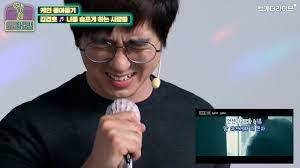

케경호
언젠가 그가 너를 맘 아프게 해 너 혼자 울고 있는걸 봤어 달려가 그에게 나 이 말 해줬으면
스트리머 케인의 별명 및 밈중 하나로, 애창곡이 김경호의 나를 슬프게 하는 사람들이라서 붙은 별명이다. 2017년 노래방에서 부른 영상이 케인TV 유튜브 채널에 올라와 있다. 원곡처럼 '네게'를 '니게'로 발음하는 것이 포인트. 2020년 8월 27일 트게더라이브 아재노래방에 출연했을 때도 이 노래를 불렀는데, 이 때의 영상은 긴장한 탓에 염소처럼 불러서 창피하다는 이유로 도네를 금지하고 있다. 앞에서 말한 노래방에서 부른 버전은 스킵하지 않는다. 웬만한 저퀄리티 팬 영상이나 뇌절 영상 도네들도 스킵을 안 하고 끝까지 보는 편인데, 트게더라이브 때의 영상은 식사 또는 설거지를 하거나 눕방을 하는 도중에도 급하게 와서 스킵을 할 정도로 굉장히 싫어한다. 하지만 단순 본인의 수치심으로 스킵하는 것이므로 이걸 보낸다고 해서 밴 등의 조치를 하진 않는다. 그 대신 할아방탱이의 우렁찬 "꺼져!!!!"를 들을 수 있다 2017년 버전도 합성 소재로 간혹 이용이 되었지만 2020년 버전이 나오면서 케인이 질색팔색을 하면 오히려 환호하는 시청자 특성 때문에 21년 중반 쯤부터 가열차게 인기를 얻으며 변화구 소재로까지 자리잡게 되었다.